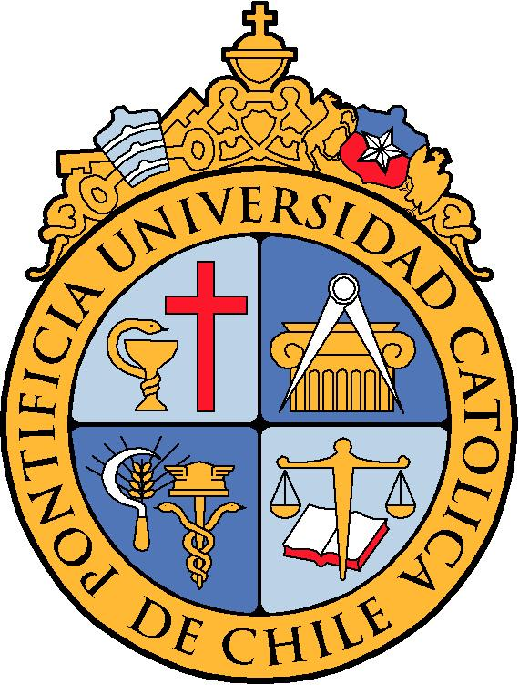

CV
Felipe Castro Castillo
- Fecha de Nacimiento: 27/05/1994
- Nacionalidad: Chileno
- Dirección: Maipú, Santiago
- Celular: +569 30660821
- Correo Electrónico: felipe.castro.castillo@gmail.com
Descripción
Me llamo Felipe Castro Castillo, tengo 29 años y soy de la comuna de Maipú, tengo experiencia en
ventas y
atención al cliente.
Siempre me han gustado las matemáticas, por lo que durante estos últimos 10 años me he encontrado realizando
clases particulares de manera constante.
Actualmente me encuentro realizando un bootcamp para lograr ser un desarrollador full
stack, ya que el mundo de la programación siempre me ha llamado la atención desde que tuve algunos ramos en la
universidad al respecto
Formación Académica
- Escuela Germán Riesco Errázuriz
- Liceo Nacional de Maipú
Liceo Científico/Humanista
- Penta UC (Campus San Joaquín)
Programa Educacional para niños con talentos académicos
- Pontificia Universidad Católica de Chile
Pedagogía en Educación Media en Matemáticas (Pausada)

Experiencia Profesional
- Mall Arauco Maipú
cargo: Apoyo temporada
función: Empaque de regalos y atención al cliente
- Ripley
cargo: Cajero
función: Atención al cliente, gestionar transacciones y venta de productos financieros
- Lessafre Chile
cargo: Operario de estuchado
función: Envasado de producto, armado de cajas y pallets, gestión y control de calidad